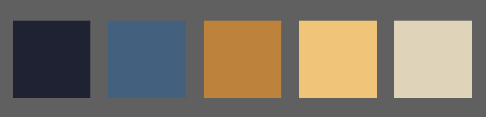

Site Purpose
The Local Restaurant Guide aims to provide comprehensive and up-to-date information about dining options in Rexburg, Idaho Falls, and surrounding areas. It features a home page with an overview and featured restaurants, a restaurant listing page with search and filter options, and a details page with in-depth information on each restaurant, including ratings, menus, and photos. The site integrates Google Maps for location display and allows users to submit reviews, making it easier to discover and enjoy local eateries.
Scenarios
Scenario 1
Visitor Profile: A food enthusiast couple who recently moved to Rexburg and loves exploring new dining options.
Question: "We just moved to Rexburg and want to find a cozy place for dinner tonight. Are there any highly-rated, family-owned Italian restaurants in the area that we can try?"
Content to Provide:
Home Page: Feature a section highlighting local favorites, possibly including family-owned Italian restaurants.
Restaurant Listing Page: Implement search and filter options allowing users to find restaurants by cuisine type, ratings, and ownership type (e.g., family-owned).
Details Page: Provide detailed information on individual restaurants, including user reviews, menus, photos, and Google Maps integration for location.
Scenario 2
Visitor Profile: A family with young children looking for a place to eat that caters to kids.
Question: "We are visiting Idaho Falls with our kids and need to find a kid-friendly restaurant for lunch. Which places offer kids menus and have a play area?"
Content to Provide:
Home Page: Highlight family-friendly restaurant options.
Restaurant Listing Page: Implement search and filter options for kid-friendly amenities such as kids’ menus, play areas, and high chairs.
Details Page: Provide detailed information about each restaurant’s kid-friendly features, menu items for children, and user reviews from other families.
Color Scheme
Typography - Roboto, sans-serif
This is what the h2 elements will look like
This is what the h3 elements will look like
This is what the rest of the site text will look like